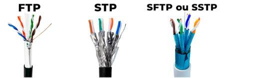
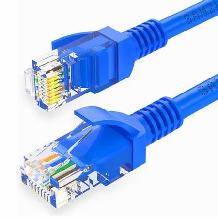
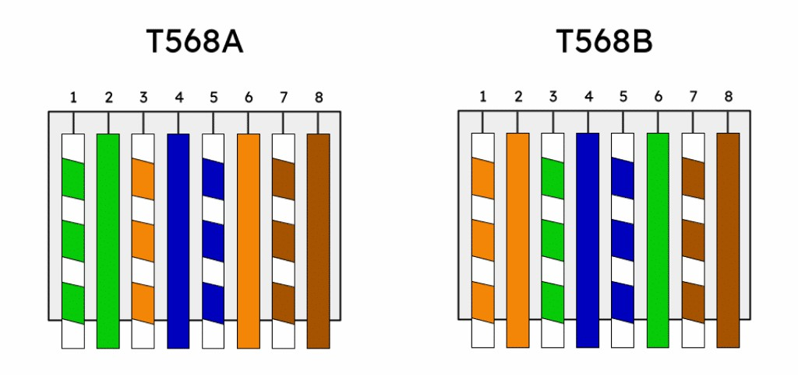
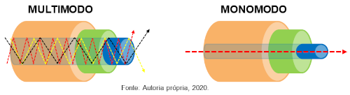
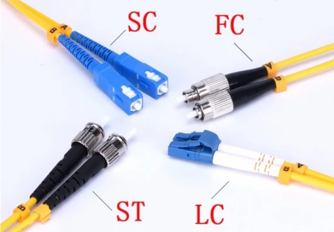
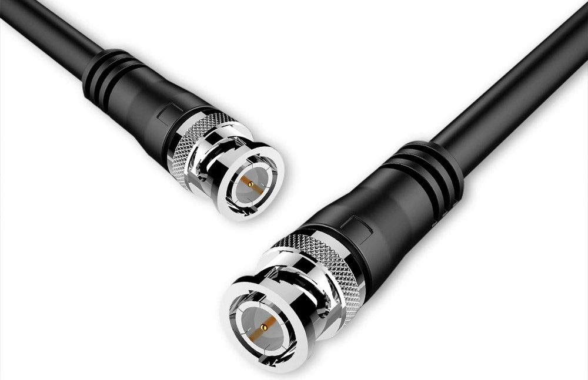

Apesar de muita coisa hoje em dia ser sem fio, ainda é necessário cabeamento em muitas partes da rede, pelo menos até chegar ao roteador, por isso é importante conhecer os tipos diferentes de cabo usados em redes internas.
O cabo par-trançado é um dos tipos de cabo mais utilizados, possuí 4 pares de fios, e cada par possuí uma quantidade de tranças (torções) por metro, e cada par (trança) possuí sinais iguais porém opostos, isso faz com que os pares minimizem interferências entre eles e permitem que os sinais transmitidos e recebidos possam ser comparados.
O cabo UTP (Unshielded Twisted Pair) é o mais utilizado, mas ele não tem nenhuma proteção extra.
O cabo SCTP (Screened Twisted Pair) e o FTP (Foiled Twisted Pair) oferecem proteção para todos os pares usando folha para blindagem.
O cabo S/STP (Screened Shielded Twisted Pair) e o S/FTP (Screened Foiled Twisted Pair) oferecem proteção para o cabo e mais uma proteção que separa cada par dentro do cabo.
PS: O cabo FTP não tem nada a ver com protocolo FTP. Da mesma forma, o cabo STP não tem nada a ver com o protocolo STP.
Veja alguns desses cabos abaixo:

Outras características presentes nos cabos são essas:
Para escolhermos bem os cabos, precisamos conhecer bem as categorias deles, que são essas:
A metragem influencia na velocidade, é a distância máxima entre o switch até o computador (incluindo tomadas, filtros e etc.).
O conector RJ-45 é o conector mais usado em redes com cabo par trançado, mas nem sempre eles são iguais, apesar de semelhantes. Veja ele abaixo:

A maioria dos dispositivos novos detectam automaticamente quem transmite e quem recebe e não depende mais da pinagem do cabo para se comunicar.
Ao crimpar cabos de par trançado, existem dois padrões, T-568A e T-568B, que definem as seguintes sequências de cores na crimpagem:
Veja melhor a imagem com a ordem dos mesmos, com a trava voltada pra trás:

A única diferença entre eles é a troca dos pares verde e laranja. Uma dica é lembrar A como abacate (que é verde e indica que os pares verdes vem primeiro) e B de bergamota (que é de cor laranja e indica que os pares laranja vem primeiro). Lembre-se também que o meio sempre é azul e o final é sempre marrom, e que sempre começa com um branco alternado com uma cor única.
E temos dois tipos de cabos:
Para aproveitar a velocidade máxima do cabo:
Sempre crimpe os quatro pares, mesmo para velocidades menores, para garantir compatibilidade futura e desempenho máximo.
Outros fatores importantes para definir a velocidade são o tipo de cabo (Cat 5e, Cat 6, etc.), comprimento do cabo e qualidade da crimpagem e conectores. Também não se deve emendar
cabos com fita isolante, e sim trocar o cabo danificado.
A fibra óptica é um dos mais importantes meios de transmissão. É recomenada principalmente para alplicações que precisam trafegar altas taxas de dados em longas distâncias. Os dados são transmitidos em forma de luz, por isso é imune a interferência eletromagnética e tem baixa atenuação. Muito usada em tráfego de dados por longas distâncias e alta velocidade.
As fibras ópticas podem ser dividdas em dois modos, fibra multimodo e fibra monomodo.
A fibra multimodo é usada em aplicações onde distâncias menores são consideradas, normalmente utiliza LED e o tamanho do núcleo é maior, por isso, a luz fica "batendo" no tráfego do cabo.
A fibra monomodo é usada em aplicações de longa distâncias, normalmente utiliza laser e o núcleo tem um tamanho menor, por isso trafega por um caminho "reto".
Ambas as fibras tem uma capa, bem semelhante.
Veja como trafega a luz entre os dois tipos de fibra:

Os conectores mais usados em fibra óptica são os conectores ST, mas atualmente é mais comum os conectores SC.
Outro que é menor e mais simples é o LC, por ter dois conectores integrados (um de transmissão e outro de recepção).
O mais fácil de instalar de todos, no entanto, é o MTRJ, parecido com o RJ-45.
Veja alguns deles abaixo:

Esses são os padrões da fibra óptica e suas velocidades:
| Tipo de Fibra | Padrão Ethernet | Velocidade | Distância |
|---|---|---|---|
| Multimodo | 100 BASE-FX | 100 Mbit/s | 2 Km |
| 1000 BASE-SX | 1000 Mbit/s | 200 - 550 m | |
| 10 G BASE-SR | 10 Gbit/s | 300 m | |
| Monomodo | 1000 BASE-LX | 1000 Mbit/s | 2 Km |
| 10 G BASE-LR | 10 Gbit/s | 10 Km |
O cabo coaxial é um tipo de cabo usado para transmitir sinais, usado não só em redes (muito raro hoje em dia), mas também em outras aplicações como CFTV (Circuito Fechado) e TV à cabo. Ele tem um condutor central, um isolante em torno dele, em volta dele uma capa metálica ou malha. Os cabos de antena geralmente são esses.
Os tipos mais comuns de cabo coaxial são:
Os conectores mais comuns são o F, muito comum nos cabos de antenas e receptores de TV por assinatura, e o BNC, geralmente usadas em CFTV. Veja o BNC logo abaixo:

Ainda que alguns cabos não sejam mais utilizados, é comum encontrar referências sobre eles em livros e materiais de estudos. Veja a tabela abaixo:
| Padrão | Cabo | Capacidade | Distância |
|---|---|---|---|
| 10 BASE 5 | Coax (thicknet ou RG-8/U) | 10 Mbps | 500 m |
| 10 BASE 2 | Coax (thinnet ou RG-58) | 10 Mbps | 185 m |
Primeiramente, configure a rede do servidor e digite o comando sudo ifconfig, daí veremos o IP obtido vi DHCP.
Como o DNS precisa ter um IP fixo, devemos editar o arquivo de configuração, digitando sudo vim /etc/network/interfaces, digite i para entrar no modo de inserção e escreva abaixo esse código:
auto eth0
iface eth0 inet static
address 192.168.1.200
netmask 255.255.255.0
network 192.168.1.0
broadcast 192.168.1.255
gateway 192.168.1.1
PS: Substitua eth0 pelo nome de sua interface.
Para editar o arquivo de hosts, digite sudo vim /etc/hosts e adicione essas entradas:
192.168.1.200 Ubuntu-32.exemplodedominio.net Ubuntu-32
PS: Esse endereço é o nome da máquina (pego depois do arroba no terminal), seguido de um nome de domínio qualquer.
Para ver o nome da máquina, digite o comando hostname (podemos editar o arquivo /etc/hostname para mudar o nome da máquina).
Dê um ping no Google, ele não conseguirá acessar a internet, por isso iremos editar o arquivo do resolvedor DNS (sudo vim /etc/resolv.conf) e digitamos isso:
nameserver 8.8.8.8
PS: Esse é o servidor DNS do Google, existem vários que podemos usar. Tente dar um ping num site agora.
Instale o programa Bind digitando sudo apt-get install bind9. Para ver se ele está rodando após instalar digite sudo /etc/init.d/bind9 status, depois vá na pasta /etc/bind e dê um ls nele.
Agora digite sudo vim /etc/bind/named.conf.local para editar o arquivo que iremos usar para adicionar as zonas DNS, entre no modo de inserção e digite isso:
// Zona de pesquisa direta:
zone "exemplodedominio.net" {
type master;
file "/etc/bind/db.exemplodedominio.net";
};
// Zona de pesquisa reversa
zone "1.168.192.in-addr.arpa" {
type master;
file "/etc/bind/db.192";
};
Esses arquivos em file são arquivos novos que serão criados, cuidado com as chaves e os pontos e vírgula. O nome da zona é o endereço IP de rede ao contrário (não confundir com o IP da máquina).
Edite o arquivo de opções digitando sudo vim /etc/bind/named.conf.options, e procure em forwarders, tire os comentários (as barras //) e deixe dessa forma:
forwarders {
192.168.1.1;
8.8.8.8;
};
PS: O IP ali é o IP do roteador e o DNS do provedor.
Copie os arquivos digitando cd /etc/bind, sudo cp db.local db.exemplodedominio.net e sudo cp db.127 db.192.
Vamos editar os arquivos copiados, o primeiro é digitando sudo vim /etc/bind/db.exemplodedominio.net, deixando dessa forma:
@ IN SOA Ubuntu-32.exemplodedominio.net. root.exemplodedominio.net. (
100 ; Serial
604800 ; Refresh
86400 ; Retry
2419200 ; Expire
604800 ) ; Negative Cache TLL
;
exemplodedominio.net. IN NS Ubuntu-32.exemplodedominio.net.
exemplodedominio.net. IN A 192.168.1.200
;@ IN A 127.0.0.1
;@ IN AAAA ::1
Ubuntu-32 IN A 192.168.1.200
roteador IN A 192.168.1.1
vendas IN A 192.168.1.50
www IN CNAME exemplodedominio.net.
Agora edite o outro arquivo digitando sudo vim /etc/bind/db.192 e deixe ele assim:
@ IN SOA Ubuntu-32.exemplodedominio.net. root.exemplodedominio.net. (
1 ; Serial
604800 ; Refresh
86400 ; Retry
2419200 ; Expire
604800 ) ; Negative Cache TLL
;
IN NS Ubuntu-32.
1 IN PTR roteador.exemplodedominio.net.
50 IN PTR vendas.exemplodedominio.net.
200 IN PTR Ubuntu-32.exemplodedominio.net.
Reinicie o Bind digitando sudo /etc/init.d/bind9 restart, e verificaremos os arquivos de zona digitando named-checkzone exemplodedominio.net /etc/bind/db.exemplodedominio.net e named-checkzone exemplodedominio.net /etc/bind/db.192. Reinicie a máquina.
Após reiniciar, digite cat /etc/resolv.conf para ver este arquivo. Para testar digite host -l exemplodedominio.net. Digite nslookup exemplodedominio.net e dig exemplodedominio.net, faça o mesmo com o IP, digitando host 192.168.1.50 e dê um ping digitando ping vendas.exemplodedominio.net.
Para testar o encaminhador, digite primeiramente o ping num site qualquer da internete veja se ele responde.
Ná máquina cliente, edite o arquivo de configuração digitando sudo vim /etc/resolv.conf e deixe ele desse jeito:
nameserver 192.168.1.200
search exemplodedominio.net
Dê um ping na máquina, digitando ping Ubuntu-32. Podemos também pingar o vendas, digitando ping vendas e ver isso também num site da internet.
O TCPDump é uma excelente ferramenta para realizar captura e análise de pacotes de rede, recomendada para profissionais que precisem realizar monitoramento e manutenção em uma rede de computadores, além de estudantes que queiram entender a fundo o funcionamento da pilha de protocolos TCP/IP.
O TCPDump, que é software livre, roda na linha de comandos, estando disponível em diversos sistemas operacionais, como Linux, BSD, OS X, AIX e outros. Ele faz uso da biblioteca libpcap para realizar a captura de pacotes, e existe uma versão da ferramenta para Windows, chamada de WinDump, que usa a biblioteca WinPcap. Neste artigo vamos nos focar no TCPDump em si, usando para isso um sistema Linux (Ubuntu; qualquer outro sistema Linux irá servir para testar os exemplos mostrados).
Para instalar o TCPDump no Ubuntu Linux, ou em sistemas baseados em Debian, use o comando sudo apt-get install tcpdump. Para ver as opções dele digite o help dele.
Podemos por exemplo, capturar somente o tráfego a partir da interface eth0 digitando sudo tcpdump -i eth0. Gravar os pacotes capturados em um arquivo de nome captura.pcap digitando sudo tcpdump -w captura.pcap. Ler os pacotes capturados a partir do arquivo captura.pcap digitando sudo tcpdump -r captura.pcap. Capturar somente o tráfego associado ao protocolo ICMP, na interface eth0 digitando sudo tcpdump -i eth0 icmp. Capturar somente o tráfego associado ao protocolo ARP, na interface eth0 digitando sudo tcpdump -i eth0 arp. Capturar somente 50 pacotes a partir da interface eth0 digitando sudo tcpdump -c 50 -i eth0. Podemos também mostrar os pacotes capturados tanto em ASCII quanto em HEX, incluindo cabeçalho Ethernet digitando sudo tcpdump -XX -i eth0. Capturar pacotes mostrando IPs em vez de nome digitando sudo tcpdump -n -i eth0. Capturar somente pacotes maiores que 100 bytes: digitando sudo tcpdump -i eth0 greater 100, neste exemplo, se emitirmos um comando ping a partir de outra janela de terminal, os pacotes não serão capturados, pois são menores que 100 bytes.
Capturar somente pacotes destinados à porta 53 digitando sudo tcpdump -i eth0 port 53, para testar, abrimos um navegador e acessamos uma página qualquer da Web. Usando filtros de condições: Capturar pacotes que usam o protocolo e cujo endereço de destino seja 64.233.186.121 digitando sudo tcpdump -i eth0 dst 64.233.186.121 and icmp, para testar, abrimos outra janela de terminal e emitimos o comando ping para vários endereços; somente serão capturados pacotes ao ser usado o endereço discriminado no comando. Se abrirmos um navegador e tentarmos acessar esse mesmo endereço (ou o site, www.planetaunix.com.br), os pacotes não serão capturados, por conta do protocolo utilizado (HTTP em vez de ICMP), mostrando que ambas as condições (AND) precisam ser satisfeitas para que essa captura tenha efeito. Capturar somente os pacotes ICMP Echo Request enviados pelo programa ping da máquina local, cujo IP é 192.168.1.105, para um endereço remoto, como 8.8.8.8 digitando sudo tcpdump -i eth0 icmp and src 192.168.1.105 and dst 8.8.8.8.
Existem diversas outras opções e funcionalidades disponíveis no utilitário, e recomendamos uma leitura minuciosa das páginas de manual do TCPDump para aprofundar seus conhecimentos a respeito.
Outras ferramentas muito utilizadas para captura e análise de pacotes são o Wireshark, Tshark, WinDump, Ettercap e NGrep, entre outras.
Os RFCs são publicações que documentam os padrões e protocolos oficiais da internet, são gerenciados pelo IETF (Internet Engineering Task Force). Podem conter de uma página à várias centenas de páginas de informações sobre um padrão.
Eles são identificados por um número, que é atribuído sequencialmente a cada novo RFC publicado. Se um padrão necessitar de atualização, então um novo RFC será gerado com as revisões necessárias. O processo de padronização de um RFC é documentado pelo RFC 2026.
A cada RFC é atribuído um status que diz respeito ao processo de padronização:
E dentro das trilhas de padrões, temos esses:
Todos os RFCs podem ser consultados gratuitamente na internet.
O repositório de RFCs é esse: https://www.rfc-editor.org/
Podemos buscar as RFCs por nome, palavra-chave, autor ou número nesse site.
No search do site (escolha a opção Advance), você pode pesquisar o RFC, informando o número do RFC ou uma palavra-chave qualquer. Também tem opções de filtro ao lado, como qualquer outro site de pesquisa.
Vamos pelo mais comum, pesquisando por palavra-chave, no exemplo, pesquisaremos ICMP.
Ali aparece informações como status, download em PDF, se ele está obsoleto, etc.
Veja alguns exemplos de RFCs:
| Padrão/Protocolo | Número do RFC |
|---|---|
| ARP | 826 |
| DHCP | 2131 |
| DNS | 1034 e 1035 |
| FTP | 959 |
| HTTP | 1945 |
| ICMP | 792 |
| IP | 791 |
| IPv6 | 2460 |
| MD5 | 1321 |
| SSH | 4251 |
| TCP | 793 |
| UDP | 768 |